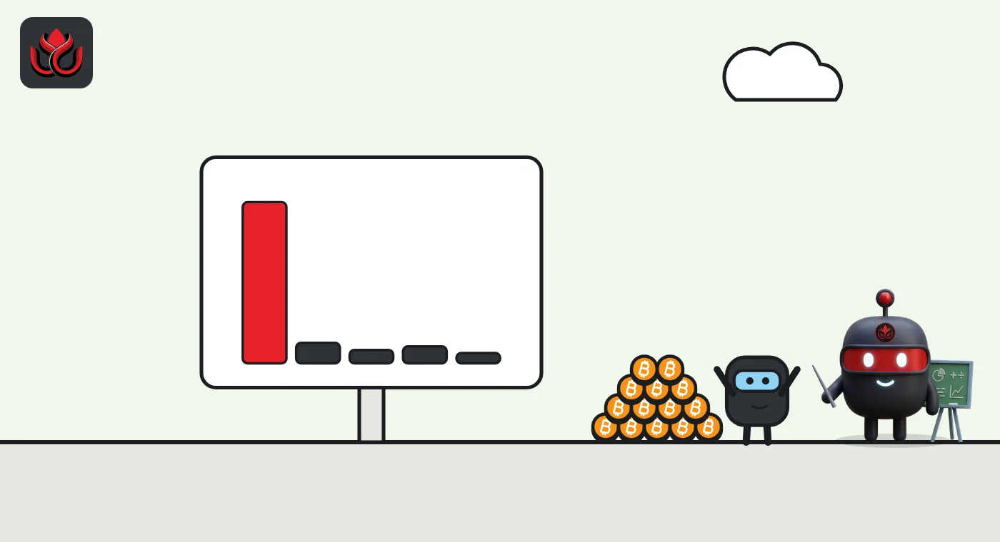

Binance took in a net 66,386 bitcoin, worth $5.2 billion, in the week it was hacked
DeepSea's data shows a net $5.04 billion flowing into Binance from October 26 to November 1, almost all of Asia's net inflow. Who sent it? The data cannot say.
Key points
- DeepSea counted 139,388 BTC going into Binance and 73,002 BTC going out from October 26 to November 1, a net intake of 66,386 BTC.
- Asian exchanges took in a net $5.25 billion that week. Binance alone was $5.04 billion of it, or 96%.
- One day did most of the work: a net $6.06 billion flowed into Asian exchanges on November 1, the day Binance reopened withdrawals.
 What DeepSea's data shows
What DeepSea's data shows
DeepSea's weekly report for October 26 to November 1 shows Binance receiving 139,388 BTC and sending out 73,002 BTC, a net +66,386 BTC. In dollars, Binance took in $11.37 billion and paid out $6.33 billion across all tracked assets, a net +$5.04 billion.
All Asian exchanges together ended the week at +$5.25 billion ($23.75 billion in, $18.49 billion out). By chain, Bitcoin alone was +$5.47 billion. The daily totals swung hard: +$655.90 million on October 26, minus $1.49 billion on October 29 (the day of the hack) and +$6.06 billion on November 1.
One limit matters: DeepSea sees which exchange wallets received the coins, not who sent them. It cannot tell whether these were users, traders, funds or Binance moving its own coins.

Data: DeepSea (desea.io), checked November 3, 2026, 6:40 p.m. ET.
What moved
In the week Binance was hacked, far more bitcoin arrived at the exchange than left it. DeepSea's count of a net 66,386 BTC is worth about $5.17 billion at CoinGecko's price of $77,811 at 6:40 p.m. ET on November 3.
Binance said its hot wallets were compromised at about 4:05 p.m. ET on October 29 and that it reopened withdrawals on November 1 (Binance, Recovery Update #2). Binance also reported its own first-day figures: $4.649 billion out and $1.01 billion in (Binance on X). Those figures cover all of Binance's assets. DeepSea tracks labeled wallets on certain chains, so the two do not measure the same thing.
A sharp turn from earlier weeks
Asia's exchanges had been bleeding money. DeepSea's weekly totals show minus $4.75 billion for October 5 to 11, minus $2.20 billion for October 12 to 18, then +$1.06 billion for October 19 to 25. The latest week jumped to +$5.25 billion. US and European exchanges barely moved, ending at minus $54.98 million.
Bybit was the only other big gainer in bitcoin, with a net +5,255 BTC. OKX lost a net 986 BTC. We covered the earlier part of this trend in Binance took in 18,435 BTC in two weeks.
Net flow into Asian exchanges by week
US$ billion
Source: DeepSea weekly report, October 26 to November 1, 2026.

Why it matters
Coins sent to an exchange are often coins someone wants to trade, sell or post as collateral. A big inflow can mean selling pressure later. But exchanges also move their own reserves, which can look like a flood of deposits. Without knowing the senders, the number is a signal, not a verdict.
What to watch
The next weekly report will show whether the bitcoin stays on Binance or flows back out. Binance's next proof of reserves will also help show how much of its bitcoin belongs to users.
LC Insight analysis
This section is our reading of the facts above, not a statement of fact.
- DeepSea's data does not show who sent these coins or why. It cannot tell user deposits apart from Binance moving its own funds, so the reason for the inflow is unknown.
- Coins on an exchange can be sold quickly, so the size of this inflow bears watching while bitcoin sits near $78,000. Whether any of it is sold is not something the data shows yet.
- Binance's own first-day figures and DeepSea's weekly count measure different things, one all assets and the other labeled wallets on certain chains. Readers should not add or compare them directly.
What's next
- DeepSea's next weekly report (November 2 to 8)
- Binance's updated proof of reserves
- Whether Bybit's bitcoin intake keeps growing
Disclaimer. This article is based on public information and the sources listed below as of the update time shown. It is for information only and is not investment, legal or tax advice. Figures may change as companies and authorities publish new data.
Sources
- DeepSea, Weekly Smart Money & Global Money Flows Report, October 26 to November 1, 2026 (read November 3, 2026, 6:40 p.m. ET)
- Binance on X, Security Incident | Recovery Update #2 (October 30, 2026)
- Binance on X, withdrawal and flows update (November 1, 2026)
- CoinGecko, Bitcoin price (November 3, 2026, 6:40 p.m. ET)